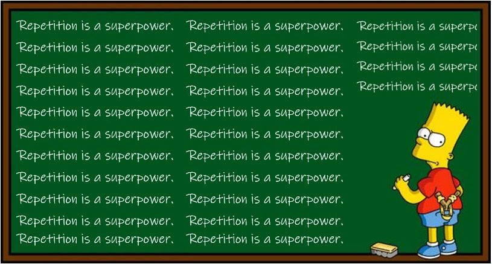

Neuroplasticity
How it helps
Neuroplasticity is like your brain grinding XP. Every rep, whether it's coding, sparring, or even learning a new language, adds experience points. Even when you fail, you're still earning XP in the background. Over time, those points unlock new abilities, shortcuts, and skills, making the next challenge easier.
That's your brain rewiring itself. Repetition builds stronger connections, and just like resetting skills in a game, you can even rebuild old habits into new ones.
How I can use it
When I get stuck on code, I remind myself it's just part of the grind. Every issue or bug I wrestle with adds XP to my brain. At first it can feel frustrating and messy, but the more reps I put in, the smoother and faster it becomes. Repetition is key.
Just like in MMA, where drilling techniques over and over makes them second nature, coding is the same. The more I practice, the more my brain adapts and rewires itself to handle new challenges.
Ways to boost it
- Do daily reps (even small coding sessions).
- Sleep & move my body so the brain stays sharp.
- Try new challenges (not just code, different skills and hobbies).
- Reset the mind when it's fried (bit of mindfulness).
Growth Mindset
What it is
Growth mindset is like fight training. A fixed mindset says “I can't beat this guy.”
Growth mindset adds the word “yet.”. “I can't beat this guy “yet.” It means skills aren't fixed. With enough drills, coaching, and feedback, you can start to believe you can.
What surprised me
I caught myself thinking “I'll never get this JS stuff.” That's fixed mindset creeping in. Flipping it to “this is hard now, but I'll get there if I keep sparring with the code” changes my whole approach.
How I'll use it
- See bugs as lessons, not failures.
- Celebrate even the small wins.
- Keep track of progress so I can see how far I've come.
Blending Into My Learning Plan
- Consistency > cramming: little daily reps build strong pathways.
- Mistakes are reps: debugging is sparring — painful, but how you grow.
- Keep receipts: blogs, commits, screenshots — proof I'm levelling up.
- Look after the whole system: sleep, exercise, balance — part of learning, not extras.
Final Words
I'm not limited by talent or how fast I “get it.” My brain can adapt, my mindset can shift, and with consistent reps I'll keep levelling up. The more you drill, the cleaner the flow gets.